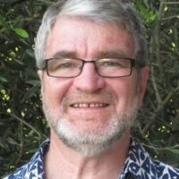
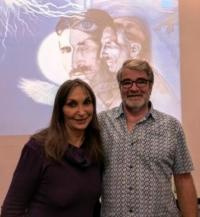

About Ken Stewart

Ken Stewart
Training in and practicing Tesla Metamorphosis is, to this point, the pinnacle of my evolution as a health care practitioner involved with people’s healing. I am drawn to search for and discover new practices that take me beyond conventional health care (which is really sickness care) and into the field of facilitating healing.
I believe if we are to create a healthier world with healthier people in it, we have to break old patterns of beliefs, old thoughts, stuck emotions and body patterns and work together to be creative and inspired in order to create changes for the benefit of humanity and the world we live in.
Healing means “becoming whole” physically, emotionally, mentally and spiritually. All healing is self-healing and no one is a healer except of themselves. Ultimately, the person facilitating the healing is “dancing” in their highest vibration without trying to “fix” anything or practice any ritual or technique.
From commencing a traditional chiropractic practice more than 30 years ago I have experienced accelerating changes in the way I practice. The last 10 years has been crucial to my understanding of health care. These changes started from my realisation that people experience pain and other symptoms (physical, emotional, mental or spiritual) to instruct them to: stop, take notice and to change something in their lives. When we are focused on fixing our symptoms we are limiting our growth and development. Of course there is a short term benefit in symptom relief such as manual care can provide to relieve a headache or undergoing a hip replacement operation to relieve a chronically degenerated hip. But what I noticed when my practice was only focused on such things as fixing a headache, was that the symptoms almost always returned because the underlying causes were not being addressed.
I continue to practice Tesla Metamorphosis, Network Care and Profound Tension Release. I have withdrawn my registration as a chiropractor as of November 2021. I no longer wished to be constrained by limitations imposed by the bureaucracy.
My inspiration to look for more sustainable ways to help people occurred when a person who had experienced more permanent relief from their symptoms would return to my practice and speak about significant changes in their lives e.g. Ive changed my whole diet or Ive left that job/relationship that was holding me back. I am inspired by people showing the courage to take on major challenges in their lives and change things. Intrigued, I would ask these individuals what it was that had brought about these life changes and they would often say it was something associated with coming to see me. From my level of understanding at that stage I could not see the relationship between these changes and my way of practicing but it happened often enough for me to try to understand what it was that I was unconsciously doing, how it worked and how I could find a way to help people more often.
It took a couple of years of research for me to really start to understand what was happening in the cases of these inspirational people and 10 years later I am still learning. The conclusions I came to from my research, based on the latest science, are:
- We are an integrated whole; body, emotions, mind and spirit.
- Each aspect of us communicates and influences the other aspects.
- We have an internal energetic communication system that stores and shares energy and information.
- The physical basis of this communication system is our connective tissue matrix.
- The primary brain of this system is our heart.
- Our internal communication system connects us to the external world and the living plants and animals in it.
- Healing occurs when we create connections with parts of our internal and external communication systems which are blocked or chaotic.
- All healing is ultimately self-healing.
- Practitioners who facilitate healing do so by helping expedite the coherent flow of energy through the complex communication systems of their clients.
There have been many seemingly fortuitous meetings with people and accessing of information that have assisted me on this journey. The first was my learning about and commencing my own care and my own practice of Network Chiropractic in 2007. Its founder, Donny Epstein was the instigator of much information and many insights.
Along this journey I have used and learnt from many energetic healing techniques. These include: Emotional Freedom Technique (EFT), Matrix Energetics , Zero Point Balancing, Past Life Healing, Matrix Repatterning and Reconnective Healing. From these therapies and others I developed my own connective tissue energy technique. I have named it Profound Tension Release. I have been using ongoing meditation techniques, Logosynthesis and Byron Katies The Work to assist my journey.
Tesla Metamorphosis
In November 2016, I chanced upon an online video clip, which reconnected me with Eric Pearls Reconnective Healing. I had previously looked into it about 10 years before but wasnt then ready to see what it offered. It was now simple for me to introduce aspects of Reconnective Healing into my Network Care practice. Yet I had a sense that there was something more beyond Reconnective Healing and I visited a practitioner from Sydney to experience it for myself and learn more. The question Whats beyond Reconnective Healing? kept popping up in my head.
In February 2017 it was invited to participate in a Shamanic Fire Ceremony in South Melbourne by the amazing energy healer (she specialises in helping couples to get pregnant) Antonia Ruhl. At the Ceremony I met Mariana Gagula and during our conversation found out that she had been to the TS Bookshop that week and had found out about Anya Petrovic and Tesla Metamorphosis. Well I was off to Melbourne to the TS Bookshop the next day to buy Anyas book Tesla Metamorphosis; Heal and Evolve, and to find out when she was coming to Melbourne.

Ken with Anya Petrovic
Anya Petrovic was originally from Belgrade in Serbia and now lives in Australia. She worked for 8 years as a trainer with Eric Pearl as he traveled around the world giving his training seminars on Reconnective Healing. Then, on returning to her home city of Belgrade a few years go. she made some amazing connections with the life of Nikola Tesla (who was Serbian) and from this she developed Tesla Metamorphosis. She now travels the world conducting Tesla Metamorphosis workshops. I had found the answer to Whats beyond Reconnective Healing?
I completed the training in the three levels of Tesla Metamorphosis with Anya in April 2017 and have been practicing these modalities since then.
The Future
Anya Petrovic finishes her book Tesla Metamorphosis: Heal and Evolve, with the line This story is not finished. Lets keep on going. I know that there is much more to learn and experience in this journey we are on. In order to proceed we have to learn to have more presence and to notice more about ourselves, others and the world we live in. Our rational materialist way of thinking and the wonders of technological achievements that are associated with it have blinded us, as a society, to the amazing world that exists beyond the dogmas of scientific materialism and religion. Leaders in the field of science are now speaking of what can be achieved through Post-Materialist Science:
The post-materialist paradigm has far-reaching implications. It fundamentally alters the vision we have of ourselves, giving us back our dignity and power, as humans and as scientists. This paradigm fosters positive values such as compassion, respect, and peace. By emphasizing a deep connection between ourselves and nature at large, the post-materialist paradigm also promotes environmental awareness and the preservation of our biosphere. In addition, it is not new, but only forgotten for four hundred years, that a lived trans-material understanding may be the cornerstone of health and wellness, as it has been held and preserved in ancient mind-body-spirit practices, religious traditions, and contemplative approaches. - Manifesto for Post-Materialist Science.
Lets gather our love, acceptance, compassion and creatively to become the future.
If you try to fix anything about yourself, it is a form of judgment. Judgment more than anything keeps us forever imprisoned in separation. A more effective approach to healing is to allow everything to surface into conscious awareness and responsible expression and to do so with the love, acceptance and compassion that arise out of Presence. - Leonard Jacobson
Find out more about Network Care and Profound Tension Release at my other website Enkindle Wellness.